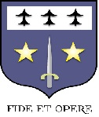
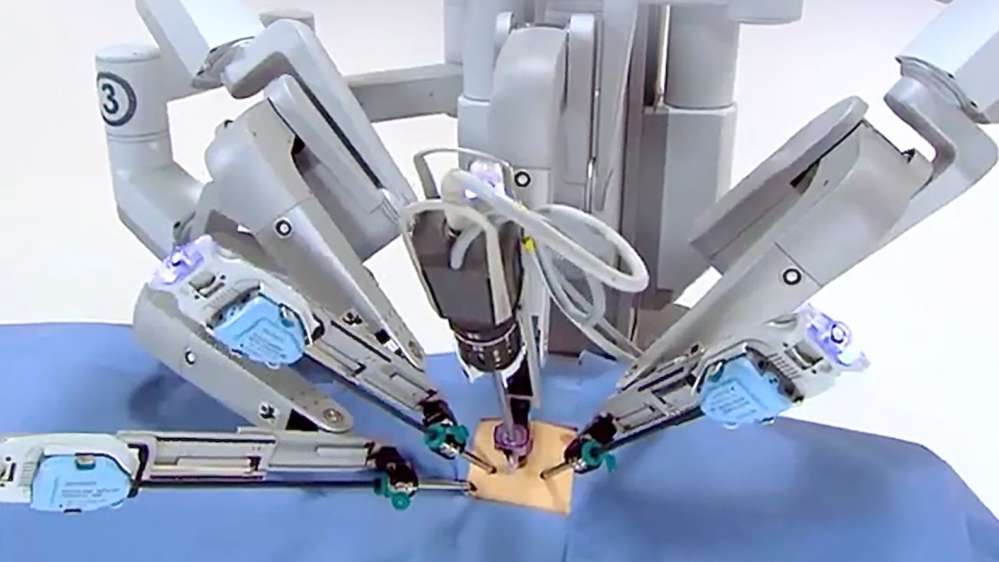

ICN - Groupe n°2 - Exercice de synthèse
Informatique et robotique dans le secteur médical
Page crée par Pauline Le Gargasson-Marion et Antoine Cheucle
Voici le sommaire:
- L'innovation au service de la qualité
- Informatique dans le domaine médical
L'innovation au service de la qualité
Un robot chirurgical "Da Vinci SI" à la Polyclinique de Blois.
Ce matériel renforce la sécurité et améliore la précision de l'acte dans le cadre d'interventions chirurgicales en urologie, gynécologie et chirurgie digestive.
Ce robot place le chirurgien à distance. Penché sur une console qui lui offre une vision 3D du champ opératoire, le chirurgien commande des instruments chirurgicaux miniaturés fixés sur des bras articulés. Ces bras augmentent l’amplitude des gestes chirurgicaux grâce à une rotation à 540°, ce qui permet au chirurgien de réaliser des mouvements auparavant impossibles à effectuer et d’éliminer tout tremblement.
Cet équipement apporte au patient une réduction du saignement et de la douleur postopératoire et la possibilité d’une convalescence raccourcie.
1 patient sur 2 est opéré par ce robot en France.
Les bénéfices de ce matériel sont de deux ordres :
- Pour le patient :
- Une technique moins douloureuse
- Une durée d’hospitalisation réduite
- Une réduction des complications liées aux sutures
- Pour le chirurgien :
- Une dextérité, une précision et un contrôle inégalés
- La simplification et l’amélioration de la précision du geste par rapport à la technique chirurgicale classique
Haut de page
Informatique dans le domaine médical
- Qu'est ce que c'est ?
L'informatique médical applique des techniques de l'informatique dans le domaine médical, entre les sciences de l’information et de la médecine. C'est aussi l'une des technologies nécessaire au développement de l’E-médecine. Elle permet d'affiner et d'accélérer ou automatiser certains moyens d'investigation médicale et de diagnostic. Elle apporte de nouveaux mécanismes et moyens d'interprétation et de raisonnement médical, d'abstraction et d'élaboration des connaissances, de mémorisation et d'apprentissage.
La science du traitement de l'information médicale touche aux fondements de la médecine et impose de nouvelles pluridisciplinarités.
Une médecine moderne et de qualité nécessite un traitement sûr de l'information médicale. En effet, la complexité croissante de la médecine actuelle (spécialisation des médecins, quantité d'information à traiter, guides de bonnes pratiques…) pousse de manière naturelle à la mise en place de système d’information étant capable d'aider le praticien dans ses nombreuses tâches quotidiennes.
Pour cela, l'informatique médicale se nourrit des avancées dans de nombreux domaines comme l'ingénierie des connaissances, l'intelligence artificielle ou bien l'ingénierie des modèles, qui apportent à l'informatique médicale des méthodes, des techniques et des outils permettant d'améliorer la formalisation des données et des connaissances dans les systèmes d'information en santé à des fins de meilleure prise en charge du patient.
L'ingénierie des modèles permet aux systèmes d'information le stockage et le partage d'information au sein d'un ou de plusieurs systèmes d'information hospitaliers, l'ingénierie de la connaissance permet la formalisation et l'intégration de la connaissance au sein du SIH et l'intelligence artificielle permet de mettre en œuvre des méthodes de raisonnement pour gérer la connaissance.

- Les principales fonctions
Un système de gestion informatique peut remplir de nombreuses fontions mais ses principales sont :
- La gestion d'un fichier de dossiers médicaux: ce fichier comprend des informations concernant le malade (nom, prénom, sexe, âge, historique du patient, etc...)
- L'édition automatique de l'ordonnance du patient avec le détail sur la posologie, l'horaire des prises des médicaments etc...
- La gestion de carnet de rendez-vous permettant au médecin d'établir un planning journalier des consultations des malades
- Le traitement de texte, ainsi que la manipulation de logiciels bureautiques
- La gestion de comptabilité générale permettant d'établir le bilan, et d'éditer le livre de compte annuel
Malgré tout, la mise en place de fichiers médicaux posent certains problèmes de "Liberté Individuelle". Le dossier médical informatisé contient des renseignements sur la vie personnelle des personnes. Ceci nécessite une protection informatique d'accès à ces dossiers, et le respect d'un code de déontologie par tous les médecins.
- L'aide à la prescription
Les outils informatiques mis à disposition des médecins pour la réalisation de leur activité professionnelle sont définis par deux termes :
- Les Logiciels de Gestion de Cabinet (LGC)
- Les Logiciels d'Aide à la Prescription (LAP)
Du point de vue sémantique, le logiciel de gestion de cabinet (LGC) permet la gestion complète des activités du médecin libéral : agendas de consultations...
Le logiciel d'aide à la prescription (LAP) est une sous-partie du LGC 'il se concentre sur la gestion de la patientèle, en termes de pathologies, diagnostics, examens et de prescriptions médicamenteuses. Les caractéristiques du LAP inclut les fonctionnalités permettant au médecin de pouvoir consulter l'historique physiopathologique d'un patient, d'enregistrer un diagnostic et une prescription médicamenteuse.
Haut de page